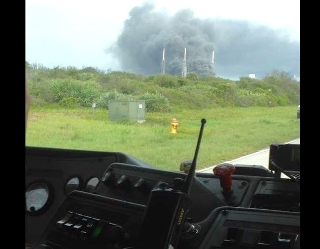
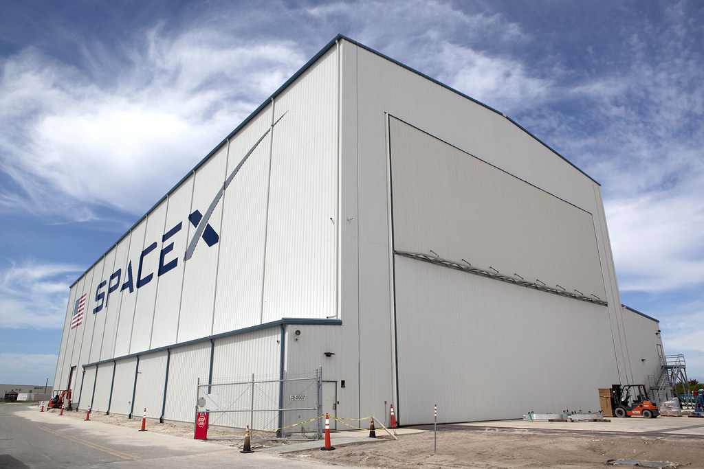
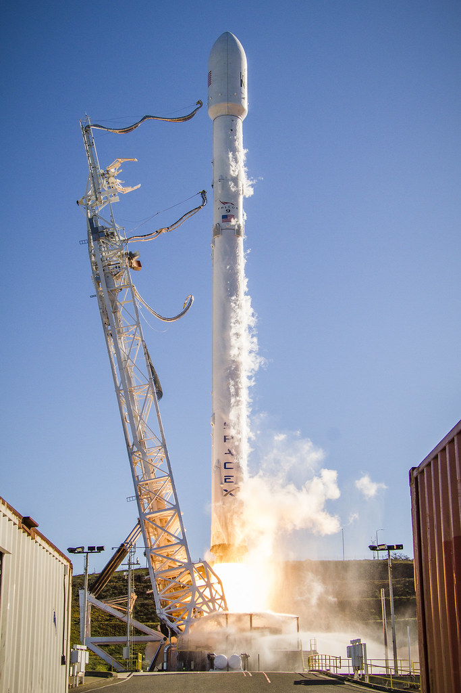
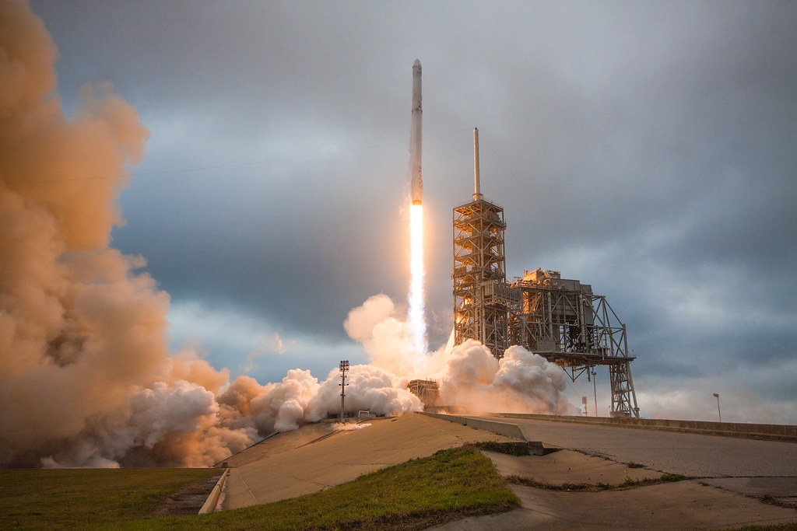

Storia SpaceX · Dodicesima parte · Settembre 2016–febbraio 2017
AMOS-6: il disastro sulla rampa
Un razzo e un satellite distrutti prima del decollo. La rampa inutilizzabile, i clienti in attesa, un problema ancora da capire. SpaceX deve dimostrare di saper ripartire, cambiando ciò che non ha funzionato.
Indice Storia SpaceX1° settembre: non si arriva nemmeno all'accensione
Due giorni prima, l'accordo con SES per il primo impiego commerciale di un booster già volato sembrava confermare il percorso imboccato da SpaceX. Otto missioni riuscite nel 2016, Dragon di nuovo sulla stazione, i primi atterraggi in mare. Il Falcon 9 non era diventato infallibile, ma l'azienda aveva risultati con cui sostenere le proprie promesse. La mattina del 1° settembre quella fiducia subisce un colpo terribile.
Sulla rampa SLC-40 di Cape Canaveral c'è il Falcon 9 destinato a lanciare AMOS-6 il 3 settembre. Si stanno caricando i propellenti per la prova di accensione a terra, lo static fire. Alle 9:07 locali, le 15:07 in Italia, il veicolo viene distrutto. I motori non sono ancora stati accesi per la prova. Non è un razzo che fallisce durante la salita: è una missione perduta prima di cominciare. [19] [10]
Nel filmato di USLaunchReport compare un primo bagliore nella parte superiore del lanciatore. La distruzione si estende al veicolo, la sezione che contiene il satellite precipita, il fuoco invade la rampa. Non c'è una sequenza di volo da interrompere, non c'è più un carico da salvare. Le immagini rendono immediatamente visibile una perdita che, fino a pochi istanti prima, nessuno stava guardando come l'esito di un lancio. [2]
Non ci sono feriti: il personale è stato allontanato dall'area secondo le procedure previste. Questa è la notizia decisiva sul piano umano. Non cancella, però, il dramma professionale e industriale. Un satellite finito, un lanciatore pronto, anni di lavoro dei rispettivi gruppi e un'infrastruttura essenziale sono coinvolti nello stesso disastro. La fotografia ripresa dai soccorsi mostra una colonna di fumo dietro le torri della rampa. È ciò che rimane del lavoro che quella mattina avrebbe dovuto preparare una partenza. [3]

Il filmato del disastro
La registrazione permette di distinguere il primo evento dalla successiva distruzione. Non mostra la causa interna: per quella servono dati, reperti e prove. Le immagini sono impressionanti, ma da sole non bastano a spiegare l'accaduto.
Apri il filmato originale di USLaunchReport. Video incorporato dal canale dell'autore, non scaricato né ripubblicato.
Una seconda crisi, quando la prima sembrava superata
Per SpaceX il peso dell'incidente va oltre il valore dell'hardware. CRS-7 era stato perduto nel giugno 2015. Il ritorno al volo di dicembre, con il primo atterraggio terrestre, aveva offerto una risposta straordinaria; i successi del 2016 l'avevano resa meno isolata. Ora, a poco più di un anno dal precedente fallimento, il Falcon è nuovamente fermo. Tornano domande che i clienti potevano ragionevolmente ritenere almeno in parte risolte.
Questa volta è danneggiata anche la rampa. Costruire un altro razzo non è sufficiente se non c'è un impianto da cui farlo partire. Occorre capire la causa, correggere il veicolo e le procedure, ottenere l'autorizzazione a riprendere e trovare una soluzione per le missioni previste dalla Florida. Sono problemi collegati, ma non identici. Ciascuno può impedire la ripresa anche se gli altri vengono affrontati.
È forse il momento più basso della SpaceX che ha ormai conquistato un posto nel mercato orbitale. Non significa che sia dimostrabilmente più vicina al fallimento economico rispetto alla crisi del 2008. Significa che il divario fra ciò che l'azienda promette e ciò che può consegnare, in quelle settimane, appare particolarmente doloroso. Ha mostrato un razzo capace di tornare a terra; adesso deve spiegare perché un altro è andato distrutto senza decollare.
Non va confuso con i mancati atterraggi sulla piattaforma oceanica. In quei casi il carico poteva essere stato consegnato e la prova sperimentale di recupero fallire separatamente. AMOS-6 è invece una perdita totale della missione. L'azienda non può presentarlo come il prezzo previsto di un tentativo di riutilizzo. Deve risponderne come fornitore del lancio.
Il 9 settembre Musk definisce l'accaduto il fallimento più difficile e complesso nei quattordici anni di SpaceX. È una dichiarazione che restituisce l'incertezza di quei giorni, non una spiegazione tecnica già acquisita. [4]
AMOS-6 non è «il satellite di Facebook»
Il satellite appartiene a Spacecom ed è stato costruito da Israel Aerospace Industries. Il suo valore viene indicato all'epoca nell'ordine dei 200 milioni di dollari. Facebook è coinvolta nell'utilizzo di capacità satellitare, insieme a Eutelsat, non è proprietaria dell'intero veicolo. Ridurre la perdita a una contrapposizione fra Musk e Zuckerberg lascia fuori il costruttore, l'operatore e gli altri servizi che il satellite avrebbe dovuto offrire. [5]
Eutelsat aveva previsto di usare capacità in banda Ka per collegamenti a banda larga nell'Africa subsahariana, con l'avvio del servizio nel 2017. Il comunicato del 1° settembre quantifica anche il mancato fatturato atteso nei successivi esercizi, pur ricordando il risparmio sui costi del contratto. Il danno non si esaurisce quindi nel satellite bruciato: riguarda servizi, ricavi e programmi che dipendono dal suo arrivo in orbita. [6]
Spacecom prospetta un rimborso di 50 milioni di dollari da SpaceX oppure un nuovo lancio senza pagamento. È una posizione contrattuale riportata allora, non il bilancio definitivo dell'incidente. Sommare il prezzo del satellite, un risarcimento richiesto e il costo della rampa per ricavare una perdita netta di SpaceX sarebbe improprio: si confonderebbero soggetti diversi, assicurazioni e obblighi ancora da definire. [5]
Per l'azienda il problema economico comprende comunque il lavoro che continua durante il fermo. Gli ingegneri devono indagare, le strutture devono essere mantenute, i clienti devono ricevere nuove informazioni sul calendario. Un'impresa di lanci guadagna offrendo un servizio, non soltanto costruendo veicoli che restano a terra. Senza conti completi pubblici non possiamo attribuire ad AMOS-6 una cifra complessiva certa. Possiamo riconoscere quanto sia difficile sostenere un'altra sospensione quando gli impegni commerciali non si sospendono con essa.
Novantatré millisecondi da ricostruire
L'indagine è condotta da SpaceX secondo un piano approvato dalla FAA, che esercita supervisione e coordinamento. Partecipano NASA, Air Force, NTSB ed esperti del settore. Nel resoconto conclusivo del 2 gennaio 2017, SpaceX parla di oltre tremila canali di video e telemetria: fra il primo dato anomalo e la perdita del secondo stadio passano soltanto 93 millisecondi. [1]
Una sequenza così breve rende insidioso il rapporto fra causa ed effetto. Un sensore può registrare il cedimento di una parte già compromessa da un evento precedente; un'immagine può mostrare il fuoco quando il processo che lo ha generato è iniziato altrove. Non basta individuare il punto più luminoso del filmato e chiamarlo spiegazione. Bisogna confrontare segnali che descrivono fenomeni differenti e stabilire quali ipotesi siano compatibili con tutti.
L'incidente a terra offre almeno una possibilità che manca in molte perdite in volo: recuperare reperti e confrontarli con le registrazioni degli impianti. La rampa distrutta è anche una scena da esaminare. Il lavoro non consiste nel cercare una formula rassicurante per il prossimo comunicato, ma nel restringere le cause plausibili e riprodurre le condizioni pericolose attraverso prove controllate.
I recipienti di elio nel secondo stadio
L'attenzione si concentra su un COPV nel serbatoio dell'ossigeno liquido del secondo stadio: un recipiente di alluminio avvolto in fibra di carbonio. Custodisce elio per la pressurizzazione dei serbatoi, non il combustibile del razzo. [1]
Ossigeno intrappolato fra parete interna deformata e rivestimento, anche allo stato solido per le temperature bassissime, può favorire un innesco per attrito o rottura delle fibre e il cedimento del recipiente. L'ossigeno alimenta la combustione del materiale: non è un combustibile che brucia da solo. [1]
Il rapporto ASAP della NASA per il 2017 confermerà che le prove hanno ricreato una deformazione del contenitore interno e permesso di identificare condizioni capaci di intrappolare ossigeno. Non si tratta dunque soltanto di un'ipotesi ricavata osservando macerie. L'indagine procede verso un comportamento che si può studiare, provocare in un ambiente di prova e poi evitare nel servizio. [7]
Resta una distinzione importante. Il resoconto identifica più cause credibili appartenenti a questa famiglia di fenomeni, non pretende di raccontare con certezza ogni movimento della singola fibra che ha dato origine al disastro. Una correzione adeguata deve coprire le condizioni pericolose riconosciute, non soltanto una versione particolarmente semplice da spiegare al pubblico. [7]
Il collegamento con CRS-7 non autorizza a dire che sia tornato lo stesso guasto. Entrambi gli incidenti coinvolgono il sistema dell'elio nel secondo stadio; nel 2015 la ricostruzione riguardava il cedimento di un sostegno durante il volo. Qui il problema emerge durante il caricamento e riguarda l'interazione fra recipiente, ossigeno e condizioni termiche. La somiglianza del settore coinvolto non rende identiche le cause.
Ripartire richiede di cambiare
La risposta immediata comprende elio caricato a temperatura più alta e il ritorno a una configurazione di caricamento già utilizzata con successo. [1] SpaceX può riprendere i lanci commerciali con il disegno esistente, ma NASA e azienda concordano che le missioni con equipaggio richiedano COPV riprogettati e nuove prove nell'ossigeno criogenico. [7]
È una parte essenziale della vicenda. Andare oltre il problema non significa continuare come prima con maggiore convinzione. Significa anche rinunciare, quando serve, a una procedura più spinta, recuperare margini e sottoporre una modifica a prove che prima non avevano colto il rischio. La velocità di sviluppo ha valore se permette di correggere davvero; diventa un limite se la fretta impedisce di conoscere le conseguenze dei cambiamenti.
Un rapporto dell'ispettorato generale NASA, pubblicato nell'aprile 2018, attribuirà al cambiamento delle procedure di caricamento un ruolo preciso: modellazione non corretta e verifiche insufficientemente estese avevano lasciato non riconosciuto il problema. Documenterà anche le revisioni, il rafforzamento dei controlli di qualità e l'aggiornamento dei processi per le modifiche del razzo. È un giudizio istituzionale successivo, non una conclusione già disponibile il giorno dell'esplosione. [8]
Questa lettura rende la ripresa più significativa, non meno. Il lavoro decisivo consiste nel cambiare il modo in cui si valida ciò che cambia. Una parte nuova o una nuova sequenza possono funzionare singolarmente e produrre un rischio quando entrano nel sistema completo. Il rimedio deve riguardare anche quella relazione. Limitarsi a celebrare la determinazione di Musk lascerebbe fuori il lavoro degli ingegneri, dei gruppi di prova e degli interlocutori che chiedono dimostrazioni verificabili.
Gli attacchi, e le domande che meritano risposta
La stampa non reagisce in modo uniforme. Il 4 settembre AVweb pubblica un commento intitolato Rocket Blows Up, Smug Smile Fades, sostanzialmente «Il razzo esplode, svanisce il sorriso compiaciuto». Il tono è apertamente polemico verso l'immagine sicura di sé del nuovo settore spaziale privato. Nell'articolo c'è anche il riconoscimento che i razzi falliscono, pubblici o privati, ma l'apertura mostra quanto rapidamente un incidente possa diventare un giudizio sull'atteggiamento di un'azienda. [9]
Il 6 settembre Jeff Foust, su The Space Review, registra le accuse di procedere troppo in fretta e le richieste di concentrarsi sui servizi presenti invece che sulle ambizioni marziane. Osserva anche la soddisfazione di alcuni commentatori davanti alla caduta di un protagonista ingombrante. La sua analisi invita però a non trarre conclusioni premature sul futuro dell'impresa. La discussione contemporanea non è una sentenza unica, pronunciata da un settore compatto. [10]
È comprensibile che un secondo disastro alimenti dubbi sulla sostenibilità del programma. Non sarebbe corretto trasformare quei dubbi in una previsione documentata e unanime di bancarotta. Le fonti qui utilizzate mostrano critiche alla prudenza, all'affidabilità e al modello di sviluppo; non dimostrano che la chiusura dell'azienda fosse certa o imminente. Raccontare la storia come una successione di nemici smentiti toglierebbe precisione proprio alla gravità del momento.
La questione degli astronauti
Le osservazioni sulla sicurezza hanno un peso diverso dalla polemica giornalistica. Il 31 ottobre, nella riunione dell'ISS Advisory Committee, Thomas Stafford richiama le perplessità sulla proposta di caricare i propellenti con l'equipaggio già a bordo. Ex comandante di Apollo 10, Stafford aveva sollevato il tema prima di AMOS-6. Dopo l'incidente la domanda diventa ancora più urgente: quali garanzie offre una fase che ha appena distrutto un veicolo sulla rampa? [11]
Su AMOS-6 non ci sono astronauti e non c'è una capsula Dragon. La discussione riguarda le missioni umane future e il cosiddetto load and go, il caricamento vicino alla partenza. Confondere il dibattito con la presenza di persone sul Falcon distrutto renderebbe il racconto più allarmante, ma falso.
L'ASAP, nel rapporto relativo al 2016, chiede di comprendere l'intero ambiente termico e i pericoli associati, non soltanto di correggere la causa specifica appena emersa. Il problema non è negare ogni innovazione: è capire quali comportamenti nuovi introduca. È una richiesta particolarmente seria quando un servizio commerciale di trasporto satelliti deve diventare un sistema per esseri umani. [12]
SpaceX non dimostra la propria forza ignorando queste obiezioni. La dimostra se riesce a rispondere con analisi, prove e modifiche sufficienti. La fiducia di NASA non può essere soltanto una dichiarazione di simpatia, così come la diffidenza non basta a dimostrare che una tecnologia sia irrecuperabile. Fra le due serve il lavoro, lento o rapido secondo ciò che il problema consente.
La rampa 39A: una scelta precedente che diventa decisiva
Mentre si indaga, bisogna affrontare l'altra conseguenza materiale del disastro: SLC-40 non può tornare immediatamente a lanciare. SpaceX ha però un impianto in trasformazione al Kennedy Space Center. Il pad 39A è una rampa della NASA, distinta da SLC-40 a Cape Canaveral. Porta con sé la storia di Apollo e dello Shuttle, ma per l'azienda il suo valore in quei mesi è anzitutto operativo.
SpaceX ha firmato il contratto ventennale nel 2014, ben prima di AMOS-6. La conversione prevede Falcon 9, Falcon Heavy e il futuro trasporto degli equipaggi. Non è quindi una rampa ottenuta dopo l'incidente come soluzione improvvisata. È un investimento già avviato che permette di non far dipendere la ripresa in Florida dalla sola ricostruzione di SLC-40. Il dossier SpaceX di CRS-10 descrive l'adattamento delle strutture e dei sistemi di terra. [13]
La fotografia dell'hangar, scattata dalla NASA nel maggio 2016, rende evidente la cronologia: la struttura di integrazione orizzontale esiste prima del disastro. Lavori che appartenevano all'espansione programmata assumono ora un'urgenza diversa. La disponibilità futura di più rampe non è soltanto una questione di quanti lanci si possano fare. Riduce la dipendenza da un unico impianto quando quell'impianto viene perduto.

.jpg){kind=link}
14 gennaio 2017: il primo ritorno è dalla California
Il 6 gennaio la FAA accetta il rapporto sull'incidente, chiude l'indagine e autorizza la missione di ritorno al volo. Il primo decollo effettivo avviene il 14 gennaio da SLC-4E a Vandenberg, in California. Non dal 39A e non dalla rampa danneggiata. Il Falcon 9 porta i primi dieci satelliti Iridium NEXT in orbita. Il comunicato del cliente conferma il risultato: questa volta la consegna è avvenuta. [14] [15]
Per Iridium è l'inizio concreto di una sostituzione della propria costellazione preparata per anni. Nel rapporto annuale il cliente ricorda un'attesa più lunga del previsto, ma può finalmente descrivere il lancio riuscito. Il fermo di SpaceX non era stato un intervallo astratto: altre aziende avevano programmi che dipendevano dalla disponibilità del Falcon. Tornare significa cominciare a sbloccarli, un carico alla volta. [16]
Il significato emotivo del decollo è diverso da quello del dicembre 2015. Allora il primo atterraggio aveva aggiunto un risultato mai ottenuto. Adesso il valore fondamentale è che il razzo riesca a svolgere di nuovo il servizio per cui è stato costruito. Dopo quattro mesi e mezzo senza lanci, la separazione dei satelliti offre una risposta che nessun calendario annunciato poteva sostituire.

.jpg){kind=link}
19 febbraio: Dragon parte dal 39A
Il 19 febbraio 2017 il Falcon 9 decolla dal pad 39A con Dragon CRS-10. È il primo lancio da quel complesso dopo l'ultima missione Shuttle del 2011. Dragon viene avviata verso la Stazione spaziale internazionale e il primo stadio torna a Landing Zone 1. La NASA può raccontare la riapertura della sua rampa storica attraverso una missione di rifornimento affidata a un operatore commerciale. [17]
Il valore simbolico è enorme, ma non deve nascondere quello pratico. SpaceX ha ripreso dalla California e ora dispone di un'altra rampa attiva in Florida. La crisi non viene superata aspettando che ogni parte del sistema torni nella condizione precedente. Si corregge il caricamento, si rimettono in volo i veicoli e si porta a compimento un'infrastruttura alternativa. Sono soluzioni differenti che concorrono allo stesso risultato.
SLC-40 non viene abbandonata: tornerà a lanciare il 15 dicembre 2017 con CRS-13. È un esito successivo al periodo principale di questo capitolo, ma chiarisce il senso del lavoro sul 39A. La nuova rampa operativa permette di ripartire mentre quella danneggiata viene ripristinata; quando anche SLC-40 sarà pronta, SpaceX non avrà soltanto recuperato ciò che aveva perso. Avrà più possibilità per organizzare i lanci. [18]

.jpg){kind=link}
Non basta la volontà, ma senza la volontà non si riparte
AMOS-6 non è un incidente da rendere meno grave perché conosciamo la crescita successiva di SpaceX. Nel settembre 2016 quella crescita non è ancora un risultato acquisito. Ci sono una perdita totale, una rampa danneggiata, clienti in attesa e un rischio tecnico da capire. Guardare quei mesi dal futuro può far sembrare la ripresa inevitabile. Per chi doveva costruirla, non lo era.
La risposta dell'azienda mostra comunque una caratteristica che diventerà decisiva: non considerare il problema la fine del programma, ma un lavoro da svolgere fino a ottenere una soluzione utilizzabile. Questa attitudine vale perché produce conseguenze verificabili. Senza indagine, correzioni, prove, autorizzazione e infrastrutture, sarebbe rimasta una formula motivazionale. Iridium e CRS-10 le danno invece il contenuto concreto di due missioni riuscite.
Resta anche una lezione meno comoda. Il disastro mette in discussione procedure e verifiche, non soltanto una parte sfortunata. SpaceX deve imparare da ciò che ha mancato di riconoscere. La sua capacità di andare avanti non consiste nell'avere sempre ragione, ma nel riuscire a cambiare dopo che un errore ha mostrato quanto possano essere pesanti le conseguenze.
La presentazione di Guadalajara del 27 settembre, dedicata al sistema di trasporto per Marte, appartiene a questo stesso periodo di crisi. La affronteremo a parte: qui basta osservare che le ambizioni non vengono ritirate mentre il Falcon è fermo. Perché quelle ambizioni possano avere un futuro, però, occorre prima tornare a consegnare i carichi già affidati a SpaceX.
Il capitolo si chiude con questo passaggio, non con una promessa di invulnerabilità. Il 39A è attivo, Dragon è ripartita, i clienti vedono di nuovo missioni compiute. Il disastro non è cancellato. È stato affrontato abbastanza da consentire il passo successivo. La crescita straordinaria degli anni seguenti dovrà essere raccontata a partire anche da qui, dal momento in cui andare avanti ha richiesto di correggere, non soltanto di insistere.
Fonti e documentazione
Ricostruzione aggiornata il 9 ottobre 2026. Periodo principale: settembre 2016–febbraio 2017. I rapporti NASA del 2017 e del 2018 sono utilizzati come verifiche successive, con la loro data esplicitata; il ritorno di SLC-40 nel dicembre 2017 è un breve riferimento in avanti. Le valutazioni sulla gravità della crisi sono distinte dai fatti tecnici e non implicano una bancarotta accertata.
- [1] SpaceX, Anomaly Updates, aggiornamenti dal 1° settembre 2016 al 2 gennaio 2017, copia conservata dalla NASA; archivio aggiornamenti SpaceX. Evento, indagine e conclusioni sul sistema COPV. L'accessibilità delle pagine storiche SpaceX può variare.
- [2] USLaunchReport, SpaceX – Static Fire Anomaly – AMOS-6 – 09-01-2016. Registrazione dell'evento, richiamata anche dal sito dell'autore.
- [3] 45th Space Wing, Emergency management: A behind the scenes look on the Eastern Range, DVIDS, pubblicazione del 13 settembre 2016. Risposta all'incidente e immagine del 1° settembre.
- [4] Washington Post, 9 settembre 2016. Riproduzione della dichiarazione contemporanea di Musk sulla difficoltà del fallimento.
- [5] Reuters, Spacecom Seeks $50 Million or Free Flight After SpaceX Explosion, 5 settembre 2016, pubblicato da Time. Operatore, costruttore e richiesta contrattuale, distinta da un risarcimento definitivo.
- [6] Eutelsat, Statement on loss of Spacecom's AMOS-6 satellite, 1° settembre 2016. Progetto di capacità satellitare con Facebook e ricadute sui ricavi attesi.
- [7] NASA, Aerospace Safety Advisory Panel, Annual Report for 2017, sezione Commercial Crew Program. Prove sui COPV, condizioni di caricamento, ripresa commerciale e redesign per le missioni con equipaggio.
- [8] NASA Office of Inspector General, Audit of Commercial Resupply Services to the International Space Station, IG-18-016, 26 aprile 2018, pagine 10 e 29 della numerazione interna. Modellazione, verifiche, controlli di qualità e gestione delle modifiche.
- [9] AVweb, Rocket Blows Up, Smug Smile Fades, 4 settembre 2016. Commento polemico contemporaneo, non rapporto tecnico né prova di imminente insolvenza.
- [10] Jeff Foust, The Space Review, 6 settembre 2016. Dibattito sulle conseguenze dell'incidente, critiche e cautela sulle conclusioni premature.
- [11] NASA, ISS Advisory Committee, verbale della riunione aperta del 31 ottobre 2016. Intervento di Thomas Stafford sulle operazioni di caricamento con equipaggio.
- [12] NASA, Aerospace Safety Advisory Panel, Annual Report for 2016, pagine 8–9 della numerazione interna. Rapporto preparato durante l'indagine, firmato l'11 gennaio 2017; rischi dell'ambiente termico e del load and go.
- [13] SpaceX, CRS-10 Dragon Resupply Mission, dossier di febbraio 2017 conservato dalla NASA. Affitto del 39A nel 2014, durata e conversione per Falcon 9, Falcon Heavy ed equipaggi. Le date del dossier sono previsioni, non attestazioni del decollo effettivo.
- [14] Spaceflight Now, FAA signs off on SpaceX mishap investigation, 6 gennaio 2017. Dichiarazione della FAA sull'accettazione del rapporto, chiusura dell'indagine e licenza di lancio.
- [15] Iridium, Success! The First Ten Iridium NEXT Satellites Have Arrived in Low-Earth Orbit, 14 gennaio 2017. Conferma diretta del cliente.
- [16] Iridium, Annual Report 2016, lettera agli azionisti del marzo 2017. Preparazione della nuova costellazione, ritardi e risultato del primo lancio.
- [17] NASA, archivio delle cronache di febbraio 2017. Lancio CRS-10 del 19 febbraio, primo impiego SpaceX del pad 39A e atterraggio a LZ-1.
- [18] NASA, Spaceport Magazine, gennaio 2018. CRS-13 del 15 dicembre 2017 e ritorno in servizio di SLC-40.
- [19] Aeronautics and Space Report of the President, anno fiscale 2016, archivio NASA, resoconto delle attività FAA. AMOS-6 come perdita durante una prova a terra, distinta dai lanci effettivamente compiuti.
Fotografie e riutilizzo
Quattro fotografie autentiche: due SpaceX con dedica CC0, una NASA e una fotografia dei soccorsi dichiarata di pubblico dominio da DVIDS. Nessuna immagine generata, nessun fotogramma ripubblicato del video. Crediti, date, fonti e condizioni nel registro delle immagini. L'uso informativo non implica approvazione del sito da parte di NASA, SpaceX o delle autorità statunitensi.